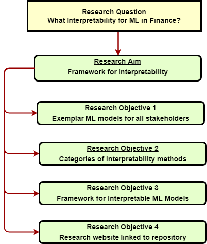

Last updated: 2022-12-01
Checks: 7 0
Knit directory: Interpretable-ML-Models/
This reproducible R Markdown analysis was created with workflowr (version 1.7.0). The Checks tab describes the reproducibility checks that were applied when the results were created. The Past versions tab lists the development history.
Great! Since the R Markdown file has been committed to the Git repository, you know the exact version of the code that produced these results.
Great job! The global environment was empty. Objects defined in the global environment can affect the analysis in your R Markdown file in unknown ways. For reproduciblity it’s best to always run the code in an empty environment.
The command set.seed(20220121) was run prior to running
the code in the R Markdown file. Setting a seed ensures that any results
that rely on randomness, e.g. subsampling or permutations, are
reproducible.
Great job! Recording the operating system, R version, and package versions is critical for reproducibility.
Nice! There were no cached chunks for this analysis, so you can be confident that you successfully produced the results during this run.
Great job! Using relative paths to the files within your workflowr project makes it easier to run your code on other machines.
Great! You are using Git for version control. Tracking code development and connecting the code version to the results is critical for reproducibility.
The results in this page were generated with repository version 09006d2. See the Past versions tab to see a history of the changes made to the R Markdown and HTML files.
Note that you need to be careful to ensure that all relevant files for
the analysis have been committed to Git prior to generating the results
(you can use wflow_publish or
wflow_git_commit). workflowr only checks the R Markdown
file, but you know if there are other scripts or data files that it
depends on. Below is the status of the Git repository when the results
were generated:
Ignored files:
Ignored: .Rhistory
Ignored: .Rproj.user/
Ignored: analysis/.Rhistory
Untracked files:
Untracked: CA1-Research proposal Outline.docx
Untracked: Research-Proposal.docx
Untracked: code/.ipynb_checkpoints/HELOC-Data-Scientist-checkpoint.ipynb
Untracked: code/.ipynb_checkpoints/HELOC-Service-User-checkpoint.ipynb
Untracked: marking=rubic.PNG
Untracked: project-ideas.odt
Untracked: timeline-24-Nov.xlsx
Unstaged changes:
Modified: README.md
Deleted: analysis/AIX360.Rmd
Deleted: analysis/about.Rmd
Deleted: analysis/license.Rmd
Modified: code/HELOC-Data-Scientist.ipynb
Note that any generated files, e.g. HTML, png, CSS, etc., are not included in this status report because it is ok for generated content to have uncommitted changes.
These are the previous versions of the repository in which changes were
made to the R Markdown (analysis/methodology.Rmd) and HTML
(docs/methodology.html) files. If you’ve configured a
remote Git repository (see ?wflow_git_remote), click on the
hyperlinks in the table below to view the files as they were in that
past version.
| File | Version | Author | Date | Message |
|---|---|---|---|---|
| html | 2ecc9ff | JJCoen | 2022-11-15 | Build site. |
| html | a152749 | JJCoen | 2022-05-23 | Build site. |
| html | e45df81 | JJCoen | 2022-05-09 | Build site. |
| html | ec61939 | JJCoen | 2022-05-09 | Build site. |
| Rmd | 809ecbf | JJCoen | 2022-05-09 | wflow_publish(c("analysis/methodology.Rmd")) |

Figure 1. Research Methodology.The overall research objective is to improve the acceptance and deployment of ML models in Finance. To that end, the following question need to be addressed:
Primary Research Question:
What interpretability methods and applications can improve the utilisation of ML in finance.
Research Aim:
To create a comprehensive framework for interpretability and improved reproducibility of ML models.
Research Objectives:
Assess exemplar interpretable ML models for financial risk in terms of addressing the needs of all stakeholders involved with such models.
Identify the characteristics of interpretability methods and categorise them.
Use the categories above to create and implement a framework for interpretable ML models.
Build a research website, linked to a github repository, that provides access to the notebooks that make up the interpretability framework.
The methodology chosen for this study and presented here is in order to rectify the engineering focus in the area of interpretable ML models.
As alluded to in the introduction, there is a gap between the current focus of explainable AI, that meets the needs of engineering, and what is required to address interpretability for all stakeholders. This is a conceptual limitation whereby ML model creators and data scientists developed interpretability functions that met their needs. In addition, lack of a definition of interpretability is recognised as a deficiency (Molnar, Casalicchio and Bischl, 2020).
Current approaches tend to describe categories of explanations based on available interpretable methods and on the capability of an interpreter algorithm (Das et al., 2020). This thesis takes a different approach by assessing exemplar IML models and determining those characteristics that lead to improved interpretability.
Also, this thesis aims to identify what improvements are needed to provide role-specific explanations for all who interact with a ML model. This is the specific problem that needs solution. The author is capable of meeting this challenge, having taken courses in Machine Learning at DBS and Coursera (Leek, 2013) along with courses at Datacamp on modelling credit risk in Python (Crabtree, 2021) and in R (Dirick, 2021). In addition, he has experience of training and continuing education. As such, he has practice in assisting the understanding of persons in various employment roles.
The knowledge and experience gained through the work effort of this thesis will assist the career aspirations of the author. His objective is to apply data analysis skills in the area finance. His primary degree is in Physics and the financial sector tends to employ such persons as “quants”. The author hopes to take advantage of the growing attention being given to interpretable ML.
The outcome of this thesis is a framework for interpretable ML models that provides for all persons who interact with an ML model. In addition, implementation of this framework is by means of a set of Python notebooks for model developer, loan officer and service user.
This research evaluates ML models for credit risk that are considered exemplar in terms of the interpretations that they provide. The research then considers the requirements of role-specific contexts. The end result is a framework for interpretability.
In effect, there is a set of observations (ML model interpretations) and criteria are developed so as to augment the observations. Known premises (explanations given by exemplar models) are used to generate untested conclusions (framework for interpretable ML models). This framework is then implemented by means of a specific interpretable ML software package.
The conceptual flow is from the specific to the general. Data collection in this case amounts to the graphs and text explanations obtained from ML model operation. This data is used to identify themes and patterns and create a conceptual framework.
Consequently, the research approach is through inductive reasoning.
This research uses the same raw data that was employed for the exemplar models. The Home Loan Equity (HELOC) data-set is available from FICO. However, this study takes a different approach to pre-processing and dealing with missing entries. The AIX 360 model treats missing values as Not a Number (NaN). A negative value signifies a missing entry. The Duke University model leaves the negative values unchanged. Since there is a large number of missing entries, this research explores the use of imputation and indicator variables to deal uncertainty about such values.
In this case, the starting point are hypotheses on the use of imputation and indicators and these are tested against observation in the form of the HELOC raw data. As such, this section of the research follows a deductive reasoning approach.
sessionInfo()R version 4.2.2 (2022-10-31 ucrt)
Platform: x86_64-w64-mingw32/x64 (64-bit)
Running under: Windows 10 x64 (build 22000)
Matrix products: default
locale:
[1] LC_COLLATE=English_United States.utf8
[2] LC_CTYPE=English_United States.utf8
[3] LC_MONETARY=English_United States.utf8
[4] LC_NUMERIC=C
[5] LC_TIME=English_United States.utf8
attached base packages:
[1] stats graphics grDevices utils datasets methods base
other attached packages:
[1] workflowr_1.7.0
loaded via a namespace (and not attached):
[1] Rcpp_1.0.9 compiler_4.2.2 pillar_1.8.1 bslib_0.4.1
[5] later_1.3.0 git2r_0.30.1 jquerylib_0.1.4 tools_4.2.2
[9] getPass_0.2-2 digest_0.6.30 jsonlite_1.8.3 evaluate_0.18
[13] tibble_3.1.8 lifecycle_1.0.3 pkgconfig_2.0.3 rlang_1.0.6
[17] cli_3.3.0 rstudioapi_0.14 yaml_2.3.6 xfun_0.31
[21] fastmap_1.1.0 httr_1.4.4 stringr_1.4.1 knitr_1.40
[25] fs_1.5.2 vctrs_0.5.0 sass_0.4.2 rprojroot_2.0.3
[29] glue_1.6.2 R6_2.5.1 processx_3.8.0 fansi_1.0.3
[33] rmarkdown_2.18 callr_3.7.3 magrittr_2.0.3 whisker_0.4
[37] ps_1.7.2 promises_1.2.0.1 htmltools_0.5.3 httpuv_1.6.6
[41] utf8_1.2.2 stringi_1.7.8 cachem_1.0.6